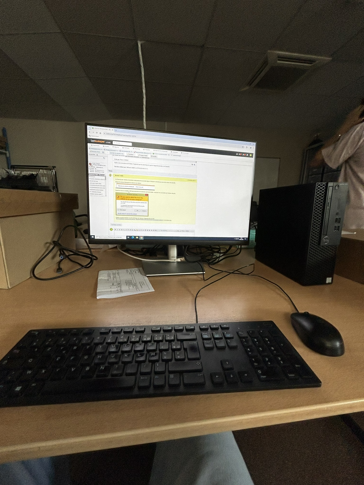

Le 10 juin, je suis arrivé à l'hôpital Lenval à 9h du matin, rempli d'excitation pour le stage qui m'attendait.
Au début de la journée, j'ai eu l'occasion d'apprendre à maîtriser les outils et les logiciels que j'utiliserai tout au long de mon stage, ce qui m'a permis de me familiariser rapidement avec l'environnement professionnel. J'ai également participé à la préparation des ordinateurs de bureau et des ordinateurs portables, une étape essentielle pour assurer que tout le matériel soit opérationnel et prêt à être utilisé par le personnel de l'hôpital.
Voici à quoi ressemblait mon poste de travail :
Parallèlement, j'ai eu l'occasion de rencontrer l'équipe avec laquelle je collaborerai. Ils m'ont présenté les différents projets que nous réaliserons ensemble durant mon stage. Parmi ces projets, j'ai pris connaissance des objectifs de renouvellement du parc informatique, visant à moderniser les équipements obsolètes. Cette mission est effectuée chaque année au sein de l'hôpital afin d'assurer la disponibilité d'un matériel moderne pour tous les employés.
De plus, j'ai été informé que nous allions fournir un support informatique aux utilisateurs, ce qui nécessite une réactivité face à leurs besoins et à leurs problèmes. Une autre tâche essentielle consistera en la mise à jour des infrastructures informatiques afin d'assurer leur performance et leur sécurité. Enfin, nous procéderons à l'amélioration du réseau de l'hôpital par l'ajout de nouvelles bornes réseau, ce qui permettra d'offrir une connexion plus stable et plus rapide tant pour le personnel que pour les patients.
Cette première journée m'a permis de comprendre l'importance de chaque aspect de notre travail et de me projeter dans les projets à venir.